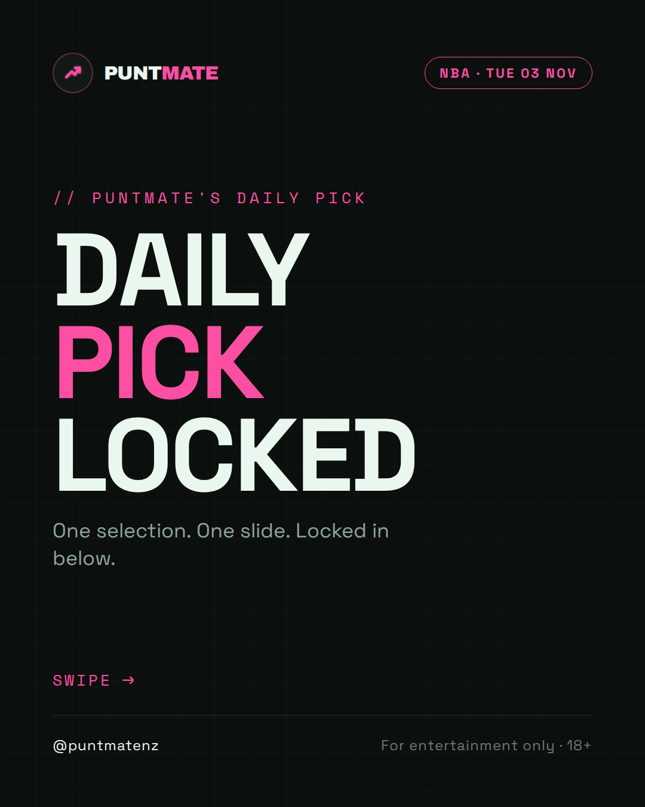
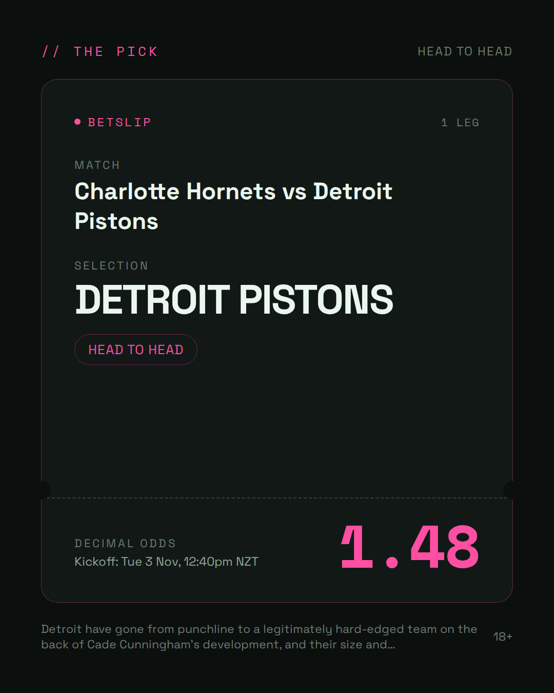
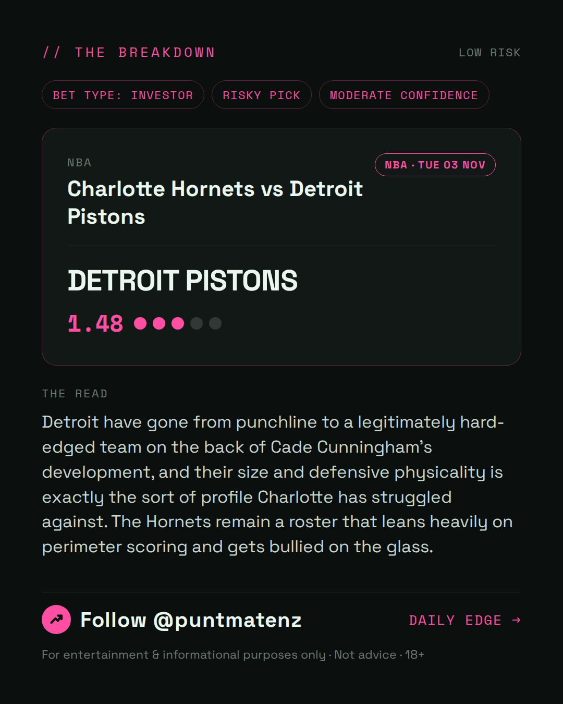
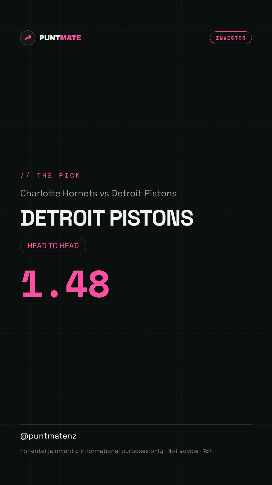

*🎯 PUNTMATE NZ — NBA* 🏟 Charlotte Hornets vs Detroit Pistons *PICK:* DETROIT PISTONS *ODDS:* 1.48 (Head to Head) *BET TYPE: INVESTOR* _Detroit have gone from punchline to a legitimately hard-edged team on the back of Cade Cunningham's development, and their size and defensive physicality is exactly the sort of profile Charlotte has struggled against. The Hornets remain a roster that leans heavily on perimeter scoring and gets bullied on the glass._ ────────────────── 📲 Join Telegram for daily picks ⚠️ For entertainment & informational purposes only. Not advice. 18+.
🎯 NBA — Charlotte Hornets vs Detroit Pistons DETROIT PISTONS @ 1.48 (Head to Head) BET TYPE: INVESTOR This one's about as close to a sure thing as sport gets — the numbers stack up and the price still pays. Detroit have gone from punchline to a legitimately hard-edged team on the back of Cade Cunningham's development, and their size and defensive physicality is exactly the sort of profile Charlotte has struggled against. The Hornets remain a roster that leans heavily on perimeter scoring and gets bullied on the glass. Follow for daily value picks → @puntmatenz ⚠️ For entertainment & informational purposes only. Not advice. 18+. #PuntmateNZ #SportsBetting #NZTAB #NBA
| has_pick | True |
| pick_id | 2026-11-03_Charlotte_Hornets_vs_Detroit_Pistons |
| run_id | 41550184033 |
| generated_at | 2026-11-03T00:08:03.630909+00:00 |
| post_date | 2026-11-03 |
| match | Charlotte Hornets vs Detroit Pistons |
| sport | basketball_nba |
| sport_label | NBA |
| market | Head to Head |
| selection | DETROIT PISTONS |
| odds | 1.48 |
| bet_type | INVESTOR_BET |
| bet_type_label | BET TYPE: INVESTOR |
| bet_type_reason | This one's about as close to a sure thing as sport gets — the numbers stack up and the price still pays. Detroit have gone from punchline to a legitimately hard-edged team on the back of Cade Cunningham's development, and their size and defensive physicality is exactly the sort of profile Charlotte has struggled against. The Hornets remain a roster that leans heavily on perimeter scoring and gets bullied on the glass. |
| classification | RISKY_PICK |
| risk | RISKY_PICK |
| confidence | MODERATE |
| confidence_label | MODERATE |
| final_explanation | Detroit have gone from punchline to a legitimately hard-edged team on the back of Cade Cunningham's development, and their size and defensive physicality is exactly the sort of profile Charlotte has struggled against. The Hornets remain a roster that leans heavily on perimeter scoring and gets bullied on the glass. |
| public_caution | Keep this one light — the value's there but so is the uncertainty. |
| theme | night |
| carousel_paths | ['data/review/2026-11-03_Charlotte_Hornets_vs_Detroit_Pistons/cover.png', 'data/review/2026-11-03_Charlotte_Hornets_vs_Detroit_Pistons/tip.png', 'data/review/2026-11-03_Charlotte_Hornets_vs_Detroit_Pistons/breakdown.png'] |
| carousel_urls | ['https://raw.githubusercontent.com/kingofthecastle24/puntmate/main/data/cards/2026-11-03_Charlotte_Hornets_vs_Detroit_Pistons_night_1_cover.png', 'https://raw.githubusercontent.com/kingofthecastle24/puntmate/main/data/cards/2026-11-03_Charlotte_Hornets_vs_Detroit_Pistons_night_2_tip.png', 'https://raw.githubusercontent.com/kingofthecastle24/puntmate/main/data/cards/2026-11-03_Charlotte_Hornets_vs_Detroit_Pistons_night_3_breakdown.png'] |
| story_path | data/review/2026-11-03_Charlotte_Hornets_vs_Detroit_Pistons/story.png |
| story_url | https://raw.githubusercontent.com/kingofthecastle24/puntmate/main/data/cards/2026-11-03_Charlotte_Hornets_vs_Detroit_Pistons_night_story.png |
| intended_platforms | ['telegram', 'instagram_feed', 'instagram_story', 'facebook'] |
| workflow_state | GENERATED |
| has_punter_multi | False |
| has_gambler_multi | False |
| has_degenerate_multi | False |